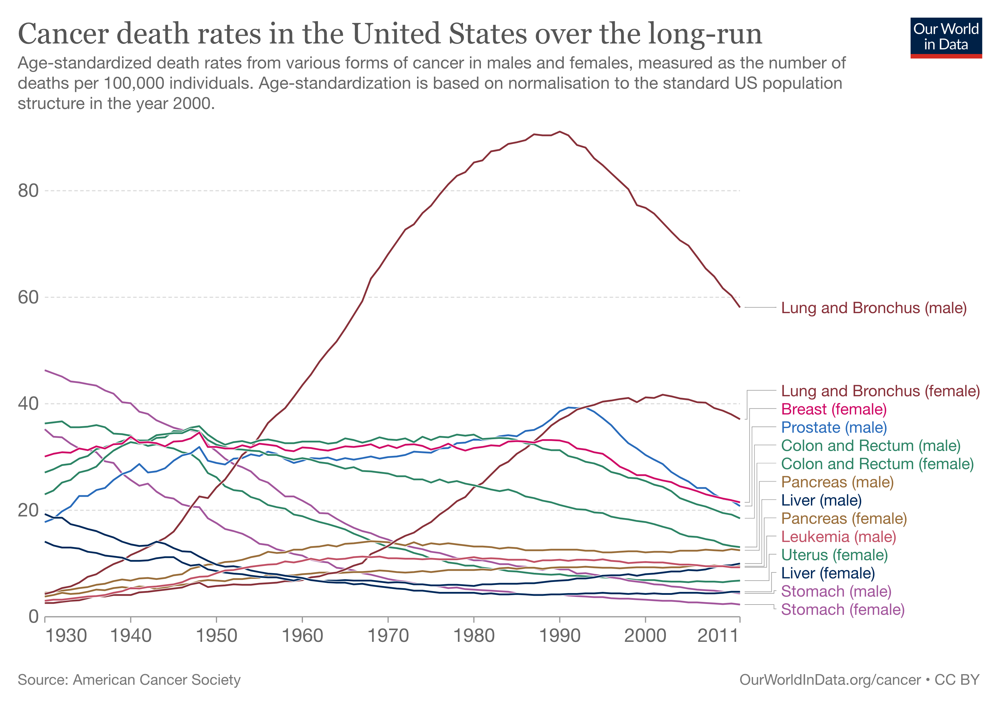

library(here)
library(readr)
library(tidyverse)
library(ggplot2)
library(dplyr)
library(plotly)
library(tidyr)
library(plyr)Visualization Exercise
GRAPHIC PLOT SELECTION FOR DATA VISUALIZATION
For this data visualization exercise, I chose to recreate the graphic plot from https://ourworldindata.org/cancer. The graphic looked really interactive with many small details and I thought that it would be really cool trying to recreate it. Here is the static graphic image for the reference.
 LOADING THE REQUIRED PACKAGES
LOADING DATA FILE AND LOOKING AT THE DATA
The data file was downloaded from https://ourworldindata.org/grapher/cancer-death-rates-in-the-us. The data seemed pretty clean and included mostly the only variables to be used for creating the given graph.
# Loading data
cancerdata <- read_csv("data/cancer-death-rates-in-the-us.csv")Rows: 82 Columns: 17
── Column specification ────────────────────────────────────────────────────────
Delimiter: ","
chr (2): Entity, Code
dbl (15): Year, Breast (female), Colon and Rectum (female), Colon and Rectum...
ℹ Use `spec()` to retrieve the full column specification for this data.
ℹ Specify the column types or set `show_col_types = FALSE` to quiet this message.head(cancerdata)# A tibble: 6 × 17
Entity Code Year Breas…¹ Colon…² Colon…³ Leuke…⁴ Liver…⁵ Liver…⁶ Lung …⁷
<chr> <chr> <dbl> <dbl> <dbl> <dbl> <dbl> <dbl> <dbl> <dbl>
1 United St… USA 1930 30.1 27.1 23 3 19.3 14.1 2.6
2 United St… USA 1931 30.6 27.7 23.7 3.2 18.6 13.4 2.6
3 United St… USA 1932 30.9 28.5 25.2 3.2 18.6 13 2.8
4 United St… USA 1933 30.8 28.7 25.7 3.4 17.4 13 3
5 United St… USA 1934 31.6 29.7 27.1 3.6 17 12.8 3.1
6 United St… USA 1935 31.3 30.2 27.5 3.8 16.5 12.2 3.5
# … with 7 more variables: `Lung and Bronchus (male)` <dbl>,
# `Pancreas (female)` <dbl>, `Pancreas (male)` <dbl>,
# `Prostate (male)` <dbl>, `Stomach (female)` <dbl>, `Stomach (male)` <dbl>,
# `Uterus (female)` <dbl>, and abbreviated variable names ¹`Breast (female)`,
# ²`Colon and Rectum (female)`, ³`Colon and Rectum (male)`,
# ⁴`Leukemia (male)`, ⁵`Liver (female)`, ⁶`Liver (male)`,
# ⁷`Lung and Bronchus (female)`glimpse(cancerdata)Rows: 82
Columns: 17
$ Entity <chr> "United States", "United States", "United…
$ Code <chr> "USA", "USA", "USA", "USA", "USA", "USA",…
$ Year <dbl> 1930, 1931, 1932, 1933, 1934, 1935, 1936,…
$ `Breast (female)` <dbl> 30.1, 30.6, 30.9, 30.8, 31.6, 31.3, 32.0,…
$ `Colon and Rectum (female)` <dbl> 27.1, 27.7, 28.5, 28.7, 29.7, 30.2, 31.5,…
$ `Colon and Rectum (male)` <dbl> 23.0, 23.7, 25.2, 25.7, 27.1, 27.5, 28.2,…
$ `Leukemia (male)` <dbl> 3.0, 3.2, 3.2, 3.4, 3.6, 3.8, 3.9, 4.1, 4…
$ `Liver (female)` <dbl> 19.3, 18.6, 18.6, 17.4, 17.0, 16.5, 16.1,…
$ `Liver (male)` <dbl> 14.1, 13.4, 13.0, 13.0, 12.8, 12.2, 12.0,…
$ `Lung and Bronchus (female)` <dbl> 2.6, 2.6, 2.8, 3.0, 3.1, 3.5, 3.9, 3.8, 4…
$ `Lung and Bronchus (male)` <dbl> 4.3, 4.7, 5.4, 5.7, 6.4, 7.5, 8.0, 9.0, 9…
$ `Pancreas (female)` <dbl> 3.8, 4.1, 4.5, 4.3, 4.4, 4.7, 5.1, 5.0, 5…
$ `Pancreas (male)` <dbl> 4.5, 4.7, 4.9, 5.1, 5.4, 5.6, 6.0, 6.2, 6…
$ `Prostate (male)` <dbl> 17.8, 18.4, 19.8, 20.7, 22.7, 22.7, 23.8,…
$ `Stomach (female)` <dbl> 35.2, 33.8, 33.7, 32.5, 31.6, 31.4, 30.9,…
$ `Stomach (male)` <dbl> 46.3, 45.7, 45.1, 44.2, 44.0, 43.7, 43.4,…
$ `Uterus (female)` <dbl> 36.3, 36.5, 36.7, 35.6, 35.6, 35.7, 36.0,…DATA EXPLORATION
#Excluding Entity and Code columns from the dataset
cancerdata1 <- cancerdata %>% select(-c(Entity, Code))
head(cancerdata1)# A tibble: 6 × 15
Year Breast…¹ Colon…² Colon…³ Leuke…⁴ Liver…⁵ Liver…⁶ Lung …⁷ Lung …⁸ Pancr…⁹
<dbl> <dbl> <dbl> <dbl> <dbl> <dbl> <dbl> <dbl> <dbl> <dbl>
1 1930 30.1 27.1 23 3 19.3 14.1 2.6 4.3 3.8
2 1931 30.6 27.7 23.7 3.2 18.6 13.4 2.6 4.7 4.1
3 1932 30.9 28.5 25.2 3.2 18.6 13 2.8 5.4 4.5
4 1933 30.8 28.7 25.7 3.4 17.4 13 3 5.7 4.3
5 1934 31.6 29.7 27.1 3.6 17 12.8 3.1 6.4 4.4
6 1935 31.3 30.2 27.5 3.8 16.5 12.2 3.5 7.5 4.7
# … with 5 more variables: `Pancreas (male)` <dbl>, `Prostate (male)` <dbl>,
# `Stomach (female)` <dbl>, `Stomach (male)` <dbl>, `Uterus (female)` <dbl>,
# and abbreviated variable names ¹`Breast (female)`,
# ²`Colon and Rectum (female)`, ³`Colon and Rectum (male)`,
# ⁴`Leukemia (male)`, ⁵`Liver (female)`, ⁶`Liver (male)`,
# ⁷`Lung and Bronchus (female)`, ⁸`Lung and Bronchus (male)`,
# ⁹`Pancreas (female)`# Changing the shape of data for keeping all cancer types in one column and their death rates in another column
cancerdata_main <- pivot_longer(cancerdata1, cols = !Year, names_to = "Cancer_types", values_to = "Death_rate")
head(cancerdata_main)# A tibble: 6 × 3
Year Cancer_types Death_rate
<dbl> <chr> <dbl>
1 1930 Breast (female) 30.1
2 1930 Colon and Rectum (female) 27.1
3 1930 Colon and Rectum (male) 23
4 1930 Leukemia (male) 3
5 1930 Liver (female) 19.3
6 1930 Liver (male) 14.1DATA VISUALIZATION
# Creating the plot
fig <- plot_ly(data = cancerdata_main, x = ~Year, y = ~Death_rate, type = 'scatter', mode = 'lines', color = ~Cancer_types, colors = c("red", "blue", "black", "brown", "#32a852", "#c10dd1"))
fig# Adding title of the plot
fig <- fig %>% layout(title = "Cancer death rates in the United States over the long-run")
# Creating hovermode in the plot
fig <- fig %>%
layout(hovermode = "x unified")
fig# Changing x-axis and y-axis as per the original plot
fig1 <- fig %>%
layout(xaxis = list(title = F,
tickvals = list(1930, 1940, 1950, 1960, 1970, 1980, 1990, 2000, 2011)),
yaxis = list(title = F,
tickvals = list(0, 20, 40, 60, 80)),
legend = list(itemclick = "toggleothers"))
fig1COMMENTS
The above plot looks similar to the original plot but I had hard time trying to figure out some small details mostly related to legend part. For example, making the legend linked to each respective plot line and changing the color of legend text into their respective line types. Overall, the plot depicts the same information as given by the original plot and I will still be working on this plot in the future to figure out the options that I had hard time figuring out this time.